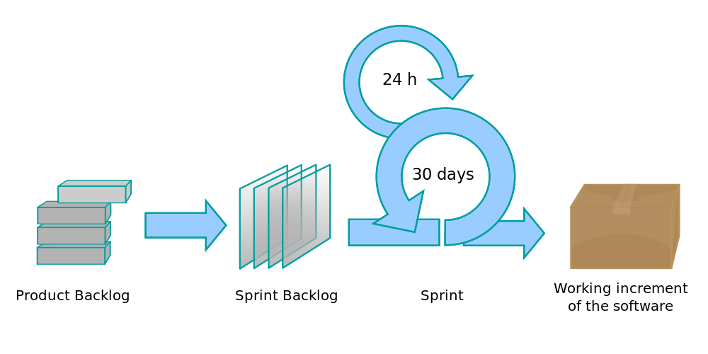
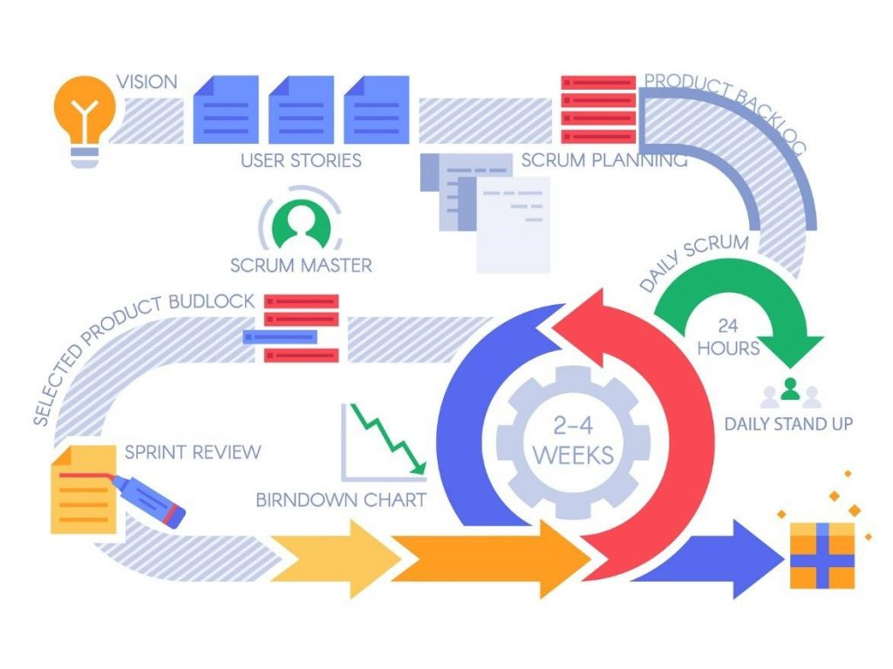
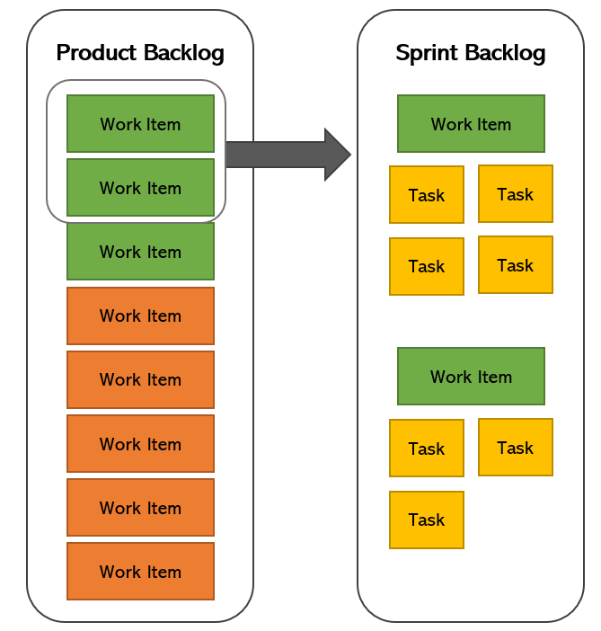
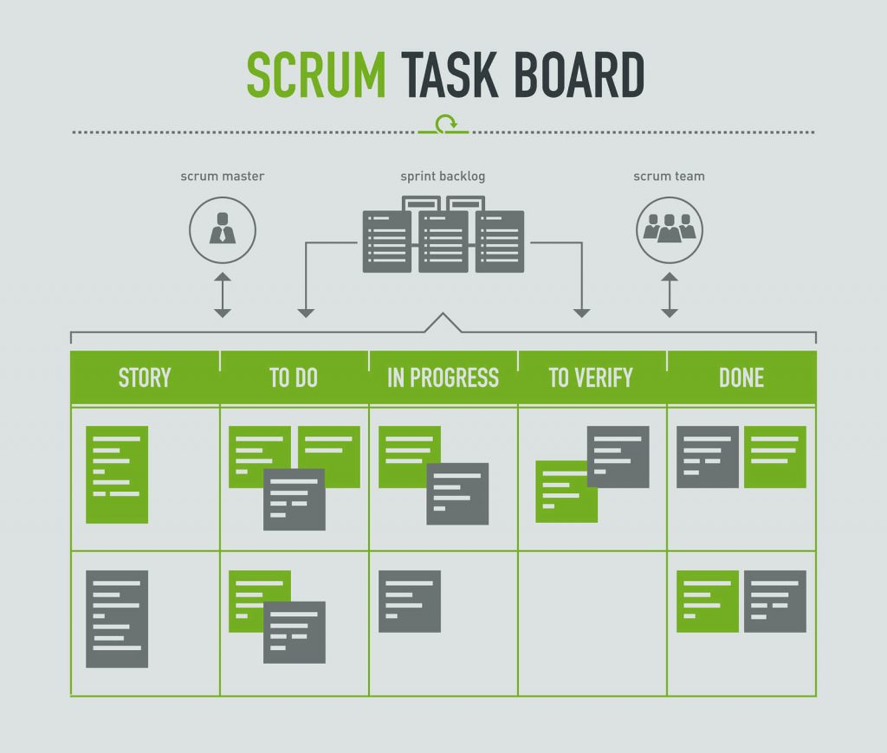
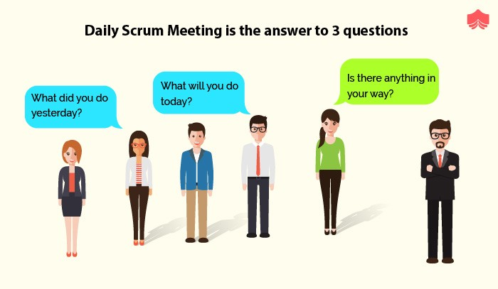

Scrum
"Scrum is a framework that helps teams to work together"
Disadvantages of the classical approach (Waterfall approach)
- deadlines were discrupted
- the product turned out to be outdated
- it was difficult to make edits
Agile: Basic principles
-
People and interraciton are more impotartant than processes and tools
-
A working product is more important than comprehensive documentation
-
Cooperation with the customer is more important than agreeing on contract terms and conditions
-
Willingness to change is more important than following the original plan
Scrum Artifacts

Events in scrum




Conclusions
- Using scrum methodology accelerates the development process
- It is easier to make adjustments to the technical task
- Quality of team members' interaction and their motivation increases
- The success of the project largely depends on the scrum master and the qualifications of the team members